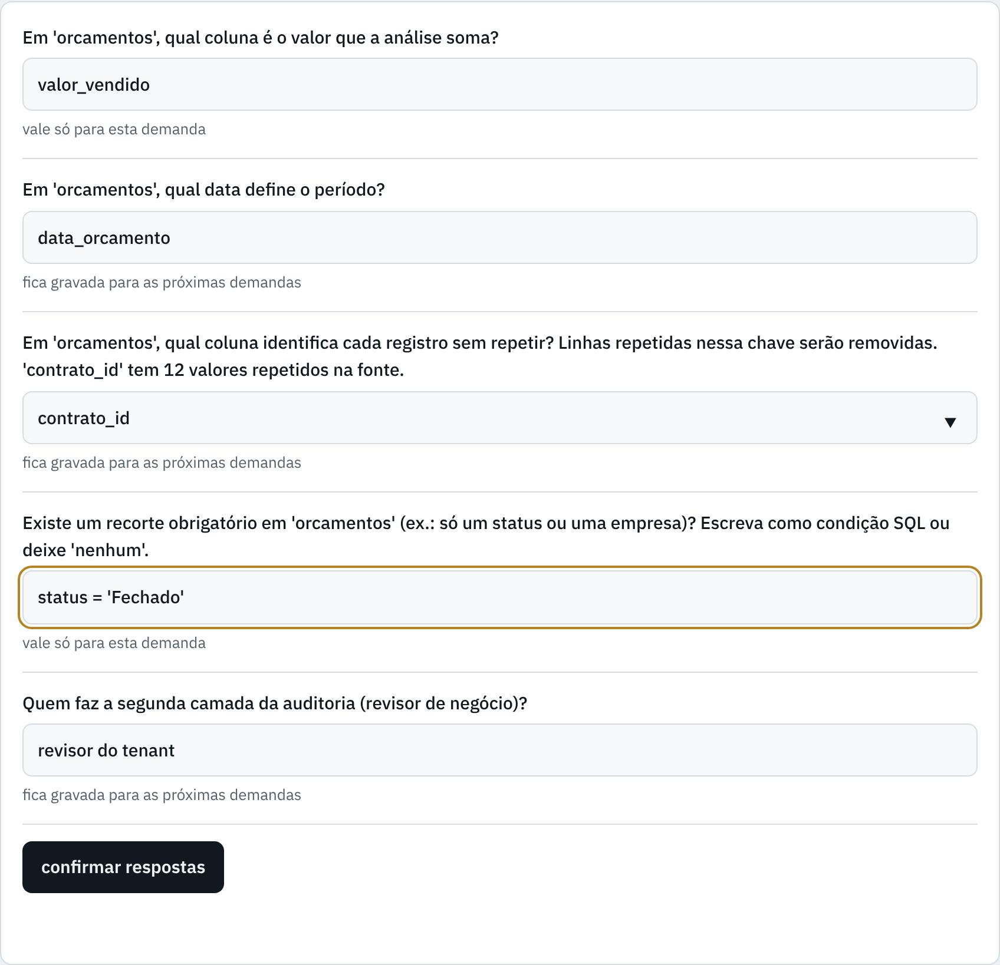

para quem decide com números
O relatório chegou. Dá para confiar nele?
O Lastro monta as análises da sua empresa direto dos sistemas que você já usa: ERP, CRM ou planilha. O número só chega até você depois de duas conferências: uma feita pelos agentes, outra por alguém que conhece o seu negócio.

“Esse número está certo?”
Antes de qualquer número sair, um auditor automático refaz a conta do zero: procura registros repetidos, valores vazios, datas impossíveis e confere se o total bate em cada etapa.
Depois, alguém do seu time abre a mesma conta numa planilha de conferência no Google Colab e aprova. Só então a análise é entregue.

“Vão mexer no meu sistema?”
Não. A conexão usa um acesso que só lê. Isso fica na própria credencial, não depende de alguém lembrar de tomar cuidado.
Mesmo que um agente tente gravar algo, o Lastro recusa e registra a tentativa. Cada empresa enxerga apenas os próprios dados, com login próprio.
Tudo que os agentes consultam, decidem e entregam fica registrado com data e autor. Daqui a seis meses dá para saber de onde veio cada número.
“Funciona com o que eu já uso?”
Estes sistemas já estão mapeados: sabemos como cada um entrega os dados, quanto aguenta de consulta e onde costuma esconder erro. Planilhas Excel e CSV entram direto, e as do Google Planilhas são lidas na pasta do Drive que você indicar.
Antes de tocar no seu sistema, testamos a conexão num ambiente simulado que se comporta como o real, com os mesmos limites e os mesmos erros.

“Vou ter que explicar tudo de novo toda vez?”
Na primeira vez, o Lastro pergunta o que não pode adivinhar: qual valor somar, qual data vale, o que conta como registro repetido. Cada pergunta já vem com uma sugestão.
O que vale para sempre fica guardado. Na demonstração, a segunda análise sobre os mesmos dados precisou de 2 respostas, não de 5.

“Preciso contratar um analista?”
O trabalho pesado de analista e de engenheiro de dados fica com os agentes: buscar, limpar, modelar, calcular e conferir.
A decisão continua com gente: quem aprova cada entrega é alguém do seu negócio, que sabe quando um número não faz sentido.
“Quanto custa para começar?”
O Lastro roda em ferramentas gratuitas e no que já é seu: a sua nuvem, o seu Power BI, as suas planilhas. Você não paga licença nova para começar.
O piloto é combinado com você antes de qualquer trabalho, com escopo e valor por escrito.
Como começar
Uma pergunta real da sua empresa, de ponta a ponta, com as duas conferências.
A pergunta
Conversamos sobre o número que mais pesa nas suas decisões hoje.
A conexão
Ligamos uma fonte em modo só leitura, ou você nos manda uma planilha.
As respostas
Você responde as perguntas que o Lastro não deve adivinhar.
A entrega conferida
Você recebe a análise, a conferência técnica e a planilha para o seu time aprovar.
Feito por quem já errou o número antes
Construímos data lakes, pipelines e painéis de Power BI desde 2019, para indústria e construção civil. A conferência em duas camadas nasceu num projeto real, em que o painel e a planilha de conferência eram comparados indicador por indicador até baterem.
Cada armadilha que custou horas em produção, como um sistema que responde “deu certo” escondendo um erro, virou uma checagem automática no Lastro.
próximo passo
Traga a pergunta que tira o seu sono
Se preferir, mande a pergunta já no primeiro contato.